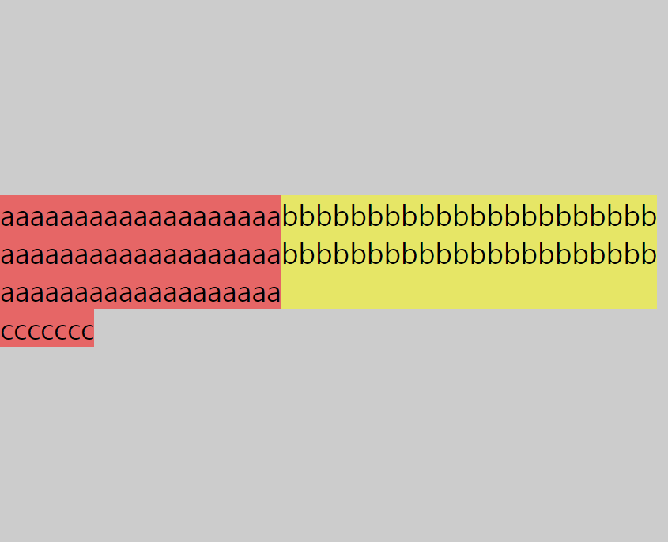

display : flex
flex는 요소의 크기가 불분명하거나 동적인 경우에도, 각 요소를 정렬할 수 있는 효율적인 방법을 제공합니다. flexbox를 만들려면 정렬하려는 요소의 부모 요소에 display: flex 속성을 선언하면 됩니다.
Flexbox
flex container 속성 : flex-direction | flex-wrap | justify-content | align-items | align-content
flex item 속성 : flex | flex-grow | flex-shrink | flex-basis | order
사용법
<!DOCTYPE html>
<html lang="en">
<head>
<meta charset="UTF-8">
<meta name="viewport" content="width=device-width, initial-scale=1.0">
<meta http-equiv="X-UA-Compatible" content="ie=edge">
<title>Document</title>
<style>
*{padding: 0; margin: 0; font-size: 1.5rem; box-sizing: border-box;}
.container {
display: flex;
/* flex-direction: row; 아이템의 방향*/
/* flex-wrap: wrap; 폭이좁아졌을 때 밑으로 내려가냐 안내려가냐 */
/* justify-content:space-around; 좌우 정렬방법/가운데 사이조절 */
/* align-items: center; 위아래로 정렬 */
/* align-content: flex-end; flex-wrap: wrap;이게 꼭있어야함 그래서 떨어졌을 때 위아래 위치조절*/
height: 100vh;
background: #ccc;
}
.item {background: rgba(255,0,0,.5);
/* flex-grow:1; 가로의 비율? 남은 여백의 비율을 나눠갖는것 */
/* flex-basis: 0; 원래 점유하는 공간 */
/* flex: 1; flex-basis: 0으로 세팅하고 안의내용물의 비율*/
}
.item:nth-child(1){
/* align-self: flex-start; 아이템의 각각의 위아래 위치 */
/* order: 2; 이 순서대로 위치가 바뀜 */
}
.item:nth-child(2) {background: rgba(255,255,0,.5);
/* flex:1; 얘만늘어남 */
/* align-self: flex-end; */
order: 3;
}
</style>
</head>
<body>
<div class="container">
<div class="item">
<p>aaaaaaaaaaaaaaaaaaa</p>
<p>aaaaaaaaaaaaaaaaaaa</p>
<p>aaaaaaaaaaaaaaaaaaa</p>
</div>
<div class="item">
<p>bbbbbbbbbbbbbbbbbbbbbb</p>
<p>bbbbbbbbbbbbbbbbbbbbbb</p>
</div>
</div>
</body>
</html>flex container 속성
flex-direction
flex-direction는 item들의 방향을 설정합니다.
| 값 | 설명 |
|---|---|
| row (기본값) | item들의 방향이 수평축 (왼쪽에서 오른쪽) |
| row-reverse | item들의 방향이 row방향의 반대 (오른쪽에서 왼쪽) |
| column | item들의 방향이 수직축 (위쪽에서 아래쪽) |
| column-reverse | item들의 방향이 column방향의 반대 (아래쪽에서 위쪽) |
[row]
[row-reverse]
[column]
[column-reverse]
flex-wrap
flex-wrap은 item들의 줄바꿈을 설정합니다.
| 값 | 설명 |
|---|---|
| nowrap (기본값) | 모든 item들이 줄바꿈 되지 않고 한 줄에 있음 |
| wrap | item들이 브라우저의 너비를 넘어가면 줄바꿈이 됨 |
| wrap-reverse | item들이 브라우저의 너비를 넘어가면 역순으로 줄바꿈이 됨 |
[wrap]
[wrap-reverse]
justify-content
justify-content는 item들의 정렬 방법을 설정합니다.
| 값 | 설명 |
|---|---|
| flex-start (기본값) | item을 시작점으로 정렬 |
| flex-end | item을 끝점으로 정렬 |
| center | item을 가운데로 정렬 |
| space-between | 시작 item을 시작점, 마지막 item을 끝점으로 정렬하고 사이값(margin)을 자동으로 정렬 |
| space-around | item의 양쪽 여백 값을 포함하여 균등하게 정렬 |
[flex-start]
[flex-end]
[center]
[space-between]
[space-around]
align-items
align-items은 item들의 위아래 정렬 방법을 설정합니다. 이 속성은 item들이 한 줄 일 때 사용합니다.
| 값 | 설명 |
|---|---|
| stretch (기본값) | item들이 container 높이만큼 늘어남 |
| flex-start | item을 각 줄의 시작점으로 정렬 |
| flex-end | item을 각 줄의 끝점으로 정렬 |
| center | item을 각 줄의 가운데로 정렬 |
| baseline | item을 문자 기준선으로 정렬 |
[stretch]
[flex-start]
[flex-end]
[center]
align-content
align-content은 item들의 위아래 정렬 방법을 설정합니다. 이 속성은 flex-wrap을 통해 item들이 여러줄 일 때 사용할 수 있습니다.
| 값 | 설명 |
|---|---|
| stretch (기본값) | item들이 container 높이만큼 늘어남 |
| flex-start | item을 각 줄의 시작점으로 정렬 |
| flex-end | item을 각 줄의 끝점으로 정렬 |
| center | item을 각 줄의 가운데로 정렬 |
| space-between | 시작 item을 시작점, 마지막 item을 끝점으로 정렬하고 사이값(margin)을 자동으로 정렬 |
| space-around | item의 양쪽 여백 값을 포함하여 균등하게 정렬 |
[stretch]
[flex-start]
[flex-end]
[center]

[space-between]
[space-around]
flex item 속성
flex
flex는 item의 너비(증가, 감소, 기본)를 설정하는 단축 속성입니다.
| 값 | 설명 |
|---|---|
| flex-grow (기본값 : 0) | item들의 증가 너비 비율을 설정 |
| flex-shrink (기본값 : 1) | item들의 감소 너비 비율을 설정 |
| flex-basis (기본값 : auto) | item들의 (공간 배분 전) 기본 너비 설정 |
flex-grow
flex-grow는 item의 증가 너비 비율을 설정합니다. 숫자가 크면 더 많은 너비를 가집니다.
flex-shrink
flex-shrink는 item의 감소 너비 비율을 설정합니다. 숫자가 크면 더 많은 너비가 감소합니다.
flex-basis
flex-shrink는 item의 (공간 배분 전) 기본 너비를 설정합니다. 숫자가 크면 더 많은 너비가 감소합니다.
order
order는 item들의 순서를 설정합니다. html의 순서가 아니라 보여지는 순서만 바뀌기 때문에 주의해야 합니다.
[order - a:2 b:1 c:3]